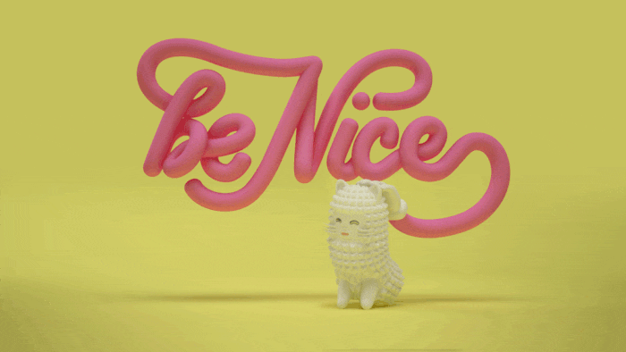
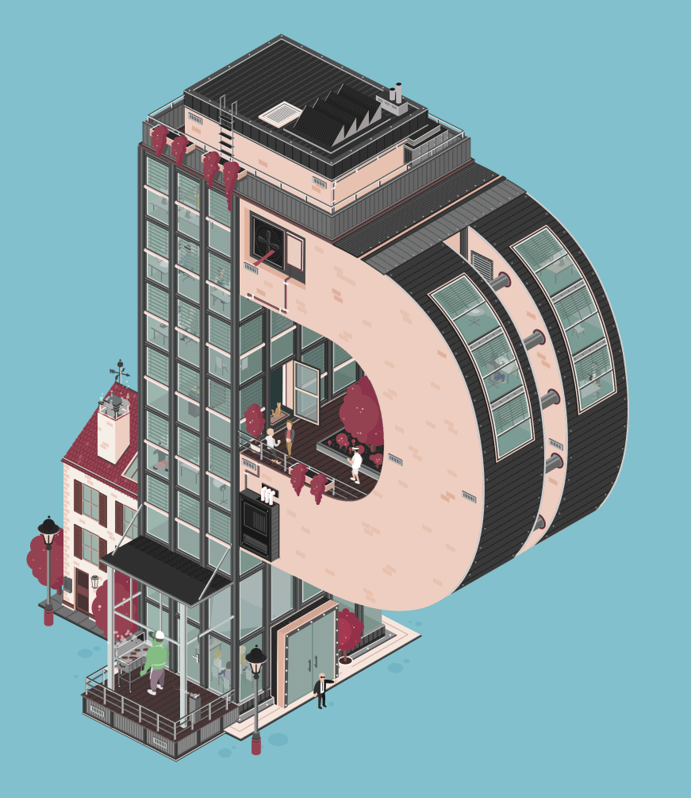

Este tipo de animación tiene varios nombres sirve en su mayoría para poder presentar una idea escrita pero visualmente bonita con animaciones pequeñas o grandes

Este tipo de animación suele ser usados por los anuncios o algunos otros canales así como cantantes para poner la letras de sus canciones. Este método se basa en que las letras te transmitan emociones y atraigan a la vista del espectador

Hay varias forma de hacer una animacion tipografica puedes desde solo hacer que unas letras de muevan en algunas direcciones hasta conseguir una animación compleja con varios personajes en las letras

Volver a la página principal